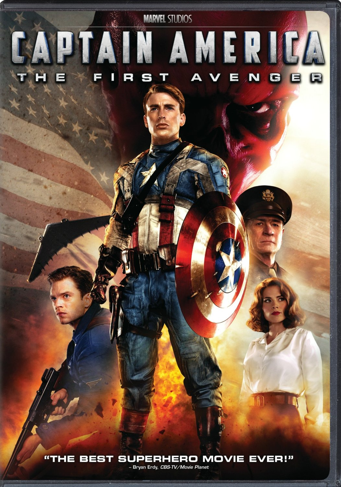

|  |
Movie Name: |
Captain America: The First Avenger (2011) |
|
In the present day, scientists in the Arctic uncover an old, frozen aircraft. In March 1942, Nazi officer Johann Schmidt and his men steal a mysterious relic called the Tesseract,[b] which possesses untold powers, from the town of Tønsberg in German-occupied Norway. In New York City, Steve Rogers is rejected for World War II military recruitment because of various health and physical problems. While attending an exhibition of future technologies with his friend, Sgt. James "Bucky" Barnes, Rogers again attempts to enlist. Overhearing Rogers' conversation with Barnes about wanting to help in the war, Dr. Abraham Erskine allows Rogers to enlist. He is recruited into the Strategic Scientific Reserve as part of a "super-soldier" experiment under Erskine, Col. Chester Phillips, and British agent Peggy Carter. Phillips is unconvinced by Erskine's claims that Rogers is the right person for the procedure but relents after seeing Rogers commit an act of self-sacrificing bravery. The night before the treatment, Erskine reveals to Rogers that Schmidt underwent an imperfect version of the procedure and suffered permanent side-effects. Schmidt and Dr. Arnim Zola harness the energies of the Tesseract, intending to use the power to fuel Zola's inventions, mounting an offensive that will change the world. Schmidt discovers Erskine's location and dispatches assassin Heinz Kruger to kill him. Erskine subjects Rogers to the super-soldier treatment, injecting him with a special serum and dosing him with "vita-rays". After Rogers emerges from the experiment taller and more muscular, an undercover Kruger kills Erskine and flees. Rogers pursues and captures Kruger, but the assassin avoids interrogation by committing suicide with a cyanide capsule. With Erskine dead and his super-soldier formula lost, U.S. Senator Brandt has Rogers tour the nation in a colorful costume as "Captain America" to promote war bonds while scientists study him and attempt to rediscover the formula. In 1943, while on tour in Italy performing for active servicemen, Rogers learns that Barnes' unit was MIA in a battle against Schmidt's forces. Refusing to believe that Barnes is dead, Rogers has Carter and engineer Howard Stark fly him behind enemy lines to mount a solo rescue attempt. Rogers infiltrates the fortress of Schmidt's Nazi division Hydra, freeing Barnes and the other prisoners. Rogers confronts Schmidt, who removes a mask to reveal a red, skull-like visage that earned him the sobriquet "the Red Skull". Schmidt escapes and Rogers returns to base with the freed soldiers. Rogers recruits Barnes, Dum Dum Dugan, Gabe Jones, Jim Morita, James Montgomery Falsworth, and Jacques Dernier to attack other known Hydra bases. Stark outfits Rogers with advanced equipment, most notably a circular shield made of vibranium, a rare, nearly indestructible metal. Rogers and his team sabotage various Hydra operations. The team later assaults a train carrying Zola. Rogers and Jones succeed in capturing Zola, but Barnes falls from the train to his assumed death.[c] Using information extracted from Zola, the final Hydra stronghold is located, and Rogers leads an attack to stop Schmidt from using weapons of mass destruction on major cities around the world. Rogers climbs aboard Schmidt's aircraft as it takes off, and during the subsequent fight the Tesseract's container is damaged. Schmidt physically handles the Tesseract, causing him to dissolve in a bright light. The Tesseract burns through the plane and is lost in the ocean. Seeing no way to land the plane without the risk of detonating its weapons, Rogers crashes it in the Arctic. Stark later recovers the Tesseract from the ocean floor but is unable to locate Rogers or the aircraft, presuming him dead. Rogers awakens in a 1940s-style hospital room. Deducing from an anachronistic radio broadcast that something is wrong, he flees outside and finds himself in present-day Times Square, where S.H.I.E.L.D. director Nick Fury informs him that he has been "asleep" for nearly 70 years. In a post-credits scene, Fury approaches Rogers and proposes a mission with worldwide ramifications. |
||